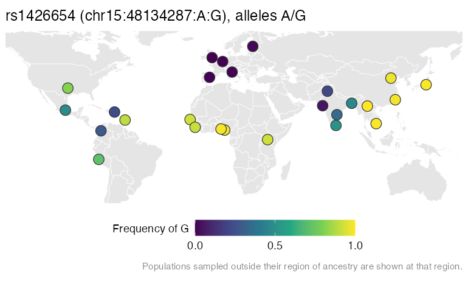
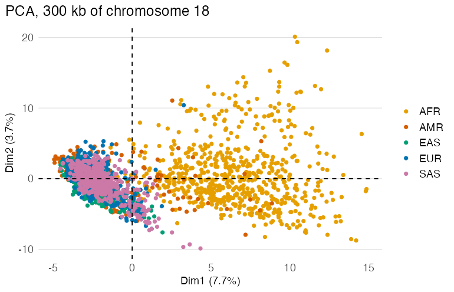
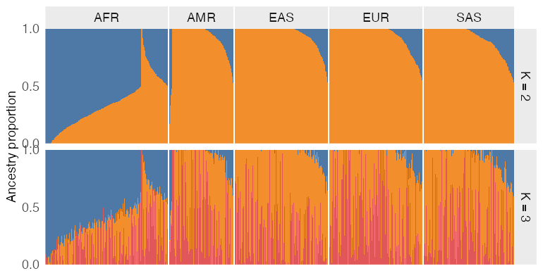
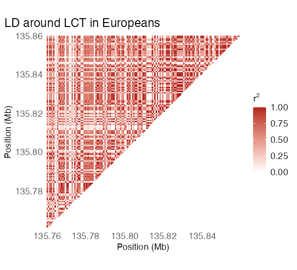

Introduction
snpscaper is an R package for teaching human population genetics. It lets students and staff explore how genetic variation is distributed within and between human populations, using real genome data from the 1000 Genomes Project: 2,504 people from 26 populations on five continents.
You name a gene (for example "LCT") or a region of the genome, and snpscaper fetches the genotypes directly from the 1000 Genomes server, prepares them, and helps you analyse and plot them. Everything happens inside R: there is no need for the command line, for separate bioinformatics programs, or for downloading files by hand.
The package was designed for final-year undergraduate biology teaching, and its documentation explains the concepts as well as the code.
More information is available on the snpscaper website and in the vignettes.
⬇️ Installation
snpscaper is only available on GitHub. It depends on some packages from Bioconductor, which pak installs automatically:
install.packages("pak")
pak::pak("jarekbryk/snpscaper")PCA uses the FactoMineR and factoextra packages, and reports need Quarto (installed with recent versions of RStudio):
⚙️ How it works
Fetching data
fetch_region() downloads genotypes for one or more genes or regions of the GRCh38 genome. It reads only the requested part of the 1000 Genomes files, keeps biallelic SNPs, and records each person’s genotype as 0, 1 or 2 copies of the alternative allele. Fetched regions are cached on disk, so fetching them again is instant and works offline.
The package comes with a table of teaching_genes with well-known patterns of variation (LCT, MC1R, SLC24A5, EDAR, ALDH2, ACKR1, HBB, CYP1A2, HTT), their key SNPs (teaching_snps), and two example datasets (example_lct and example_neutral) that work offline.
Preparing data
filter_snps() removes rare SNPs and, optionally, SNPs in strong linkage disequilibrium with their neighbours. keep_pops() chooses populations. summary() shows every processing step.
Analysing data
| Analysis | Functions |
|---|---|
| Principal component analysis |
as_pca_table(), then FactoMineR::PCA() and factoextra
|
| Admixture |
run_admixture(), get_ancestry(), plot_admixture(), plot_cross_entropy()
|
| Allele frequencies |
calc_allele_freqs(), plot_freqs(), map_freqs()
|
| Differentiation (Fst) |
calc_fst(), plot_fst()
|
| Diversity (heterozygosity) |
calc_heterozygosity(), plot_heterozygosity()
|
| Linkage disequilibrium |
calc_ld(), plot_ld()
|
All plots are ggplot2 objects using a consistent theme (theme_jb()) and fixed, colour-blind-friendly population colours (superpop_colours, pop_colours).
Reports
render_report() produces a self-contained HTML handout for any gene or region, with all of the analyses above, numbered figures and tables, a methods section, and (in the staff version) notes on the expected patterns.
👩🏽💻️ Example use
library(snpscaper)
# Fetch the lactase gene, remove rare SNPs, choose some populations
lct <- fetch_region("LCT") |>
filter_snps(min_maf = 0.01) |>
keep_pops(pop = c("YRI", "LWK", "GBR", "FIN", "CHB", "JPT", "GIH", "PEL"))
# Where is the lactase persistence allele common?
lct |>
calc_allele_freqs() |>
map_freqs(snp = "rs4988235")
# PCA with FactoMineR and factoextra
pca <- FactoMineR::PCA(as_pca_table(filter_snps(lct, prune_ld = TRUE)),
quali.sup = 1:3, graph = FALSE)
factoextra::fviz_pca_ind(pca, habillage = "super_pop",
palette = unname(superpop_colours), geom = "point")
# Admixture analysis
adm <- run_admixture(filter_snps(lct, prune_ld = TRUE), k = 2:4)
plot_admixture(adm, k = 2:4)
# A complete handout for a gene
render_report("SLC24A5")



📚 Data
Genotypes: 1000 Genomes Project high-coverage phased panel, GRCh38 (Byrska-Bishop et al. 2022, Cell 185: 3426-3440), from the EBI FTP server. Gene and SNP positions: Ensembl.
💪🏽 Acknowledgements
Admixture analysis uses the sNMF method of the LEA package (Frichot et al. 2014). Data are read with VariantAnnotation and Rsamtools. snpscaper grew out of a student project that explored 1000 Genomes data in R.